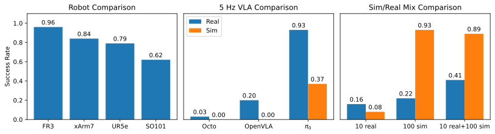

Vision-Language-Action models (VLAs) mark a major shift in robot learning. They replace specialized architectures and task-tailored components of expert policies with large-scale data collection and setup-specific fine-tuning. In this machine learning-focused workflow that is centered around models and scalable training, traditional robotics software frameworks become a bottleneck, while robot simulations offer only limited support for transitioning from and to real-world experiments. In this work, we close this gap by introducing Robot Control Stack (RCS), a lean ecosystem designed from the ground up to support research in robot learning with large-scale generalist policies. At its core, RCS features a modular and easily extensible layered architecture with a unified interface for simulated and physical robots, facilitating sim-to-real transfer. Despite its minimal footprint and dependencies, it offers a complete feature set, enabling both real-world experiments and large-scale training in simulation. Our contribution is twofold: First, we introduce the architecture of RCS and explain its design principles. Second, we evaluate its usability and performance along the development cycle of VLA and RL policies. Our experiments also provide an extensive evaluation of Octo, OpenVLA, and Pi Zero on multiple robots and shed light on how simulation data can improve real-world policy performance.
Traditional robotics is built around hardware, with many interacting parts and specialized AI modules. With machine learning taking the lead, this relationship flips around: robots are components of a machine learning pipeline.
Many libraries embrace this and adopt a Python- and ML-first approach, but they often lack robust robotics features and hardware support. Robust policies require careful debugging in both simulation and hardware, which relies on classical robotics tools.
RCS bridges this gap by combining an ML-first design with the essential robotics tools. It gives you the means to debug interfaces, validate tasks and test directly on hardware—while remaining a light-weight pip-installable package with minimal dependencies.
C++/Python API We expose device APIs in C++ and generate Python bindings for them, resulting in a mirrored API in Python and C++. A new device can be integrated into RCS either in C++ or in Python, ensuring broad hardware compatiblity.
Composable scenes We use our own device APIs to build higher level abstractions. The concept of gymnasium wrappers is used to enable scene creation via composition.
Layered architecture Because we build upon a minimal low-level device API, you can quickly get up and running with new hardware: implement our interface, benefit from all the wrappers and apps higher up in the stack.
We evaluate the usability of RCS's hardware oriented features by integrating multiple setups with different robots, grippers, cameras and touch sensors. In total, three robots, four end-effectors, two cameras and one tactile sensors are implemented, both in simulation and on physical hardware. All can be teleoperated with multiple devices an be used to record data.
We also verify that RCS integrates cleanly in ML pipelines, both in the imitation learning and reinforcement learning settings. Multiple VLAs are fine-tuned and deployed, and we solve a simple simulated pick up task.
@misc{juelg2025robotcontrolstack,
title={{Robot Control Stack}: {A} Lean Ecosystem for Robot Learning at Scale},
author={Tobias J{\"u}lg and Pierre Krack and Seongjin Bien and Yannik Blei and Khaled Gamal and Ken Nakahara and Johannes Hechtl and Roberto Calandra and Wolfram Burgard and Florian Walter},
year={2025},
howpublished = {\url{https://arxiv.org/abs/2509.14932}}
}